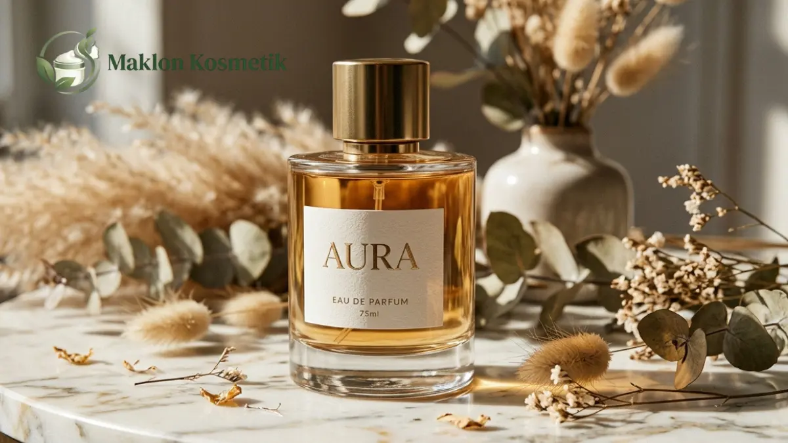
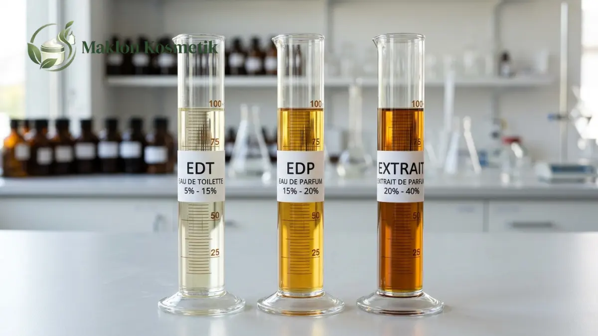

Solusi Maklon Parfum EDP Tahan 24 Jam Tanpa Beban Modal Besar

Daftar Isi Artikel Buka/Tutup
- Apa Itu Maklon Parfum EDP dan Mengapa Banyak Brand Memilihnya?
- Apa yang Membuat Parfum EDP Bisa Tahan Hingga 24 Jam?
- Bagaimana Struktur Piramida Aroma Menentukan Ketahanan?
- Bagaimana Maklon Parfum Menekan Beban Modal Awal?
- Bagaimana Alur Produksi Maklon Parfum EDP dari Brief hingga Pengiriman?
- Bagaimana Cara Menguji Klaim Daya Tahan Parfum 24 Jam?
- Kesalahan Umum Brand dan Tips Memilih Pabrik Maklon
- Pertanyaan Umum (FAQ)
Ringkasan Poin Inti
- Maklon parfum EDP memungkinkan peluncuran lini wewangian sendiri tanpa beban investasi mesin dan laboratorium.
- Daya tahan wangi dipengaruhi oleh konsentrasi minyak parfum 15-20%, jenis fixatif, serta waktu maserasi yang matang.
- Beban modal awal dapat ditekan signifikan dengan memanfaatkan formula teruji, kemasan botol standar, dan MOQ fleksibel.
- Klaim daya tahan 24 jam wajib diverifikasi melalui panel uji pakai objektif sebelum dirilis ke materi promosi publik.
Apa Itu Maklon Parfum EDP dan Mengapa Banyak Brand Memilihnya?
Solusi maklon parfum EDP tahan 24 jam membuka peluang bagi pemilik merek untuk merilis produk wewangian berkualitas tinggi lewat pabrik berlisensi resmi. Skema kerja sama ini membebaskan Anda dari keharusan membangun pabrik atau tim formulator kimia sendiri.
Dalam skema maklon, pabrik bertanggung jawab atas seluruh rantai produksi, pengadaan bahan konsentrat aroma, hingga proses pengisian botol yang higienis. Pemilik merek dapat mencurahkan energi untuk menyusun konsep narasi aroma, desain identitas, dan pemasaran digital.
Kategori Eau de Parfum (EDP) menjadi primadona industri wewangian karena memadukan ketahanan aroma yang awet dengan harga eceran yang rasional. Konsumen mencari wangi yang awet seharian di cuaca tropis tanpa harus menyemprot ulang setiap jam.
Layanan maklon parfum ini sangat ideal bagi pemilik brand kosmetik, kreator konten, pemilik ritel kecantikan, hingga instansi korporasi yang ingin menghadirkan lini cinderamata eksklusif dengan margin bisnis yang sangat menarik.
Apa yang Membuat Parfum EDP Bisa Tahan Hingga 24 Jam?
Daya tahan wangi parfum tidak bergantung pada satu bahan ajaib, melainkan hasil sinergi harmonis antara konsentrasi bibit wangi, agen pengikat, dan proses penuaan. Formulator merancang formula agar pelepasan molekul aroma berlangsung stabil sepanjang hari.
Secara umum, kadar konsentrat minyak wangi pada EDP berkisar antara 15 hingga 20 persen, jauh lebih padat dibanding Eau de Toilette (EDT). Kepadatan molekul aroma ini menjadi pondasi fisik utama agar uap wangi tidak lekas sirna diterpa angin.
Bahan pengikat atau fixatif memiliki fungsi esensial untuk menurunkan laju evaporasi senyawa wangi yang mudah menguap. Fixatif seperti kelompok musk, benzoin resin, atau amber sintetik menjaga karakter aroma tetap melekat utuh pada serat kain dan pori kulit.
Selain itu, tahap maserasi dingin selama beberapa minggu sangat krusial agar campuran minyak esensial dan alkohol denaturasi menyatu homogen. Parfum yang dimaserasi sempurna tidak menimbulkan sengatan alkohol tajam saat pertama kali disemprotkan.

Bagaimana Struktur Piramida Aroma Menentukan Ketahanan?
Arsitektur parfum tersusun atas tiga lapisan piramida, yakni top notes, middle notes, dan base notes. Karakter ketahanan wangi hingga puluhan jam ditentukan oleh bobot molekul yang ditempatkan pada lapisan dasar formula.
Top notes memberikan impresi kesegaran awal selama lima belas menit pertama, lazimnya bernuansa citrus atau floral buah ringan. Saat lapisan atas mereda, middle notes merekah sebagai identitas aroma utama selama beberapa jam berikutnya.
Kunci wangi tahan seharian bertumpu pada base notes berbobot molekul berat seperti kayu cendana, vanila, cedarwood, dan patchouli. Bagian dasar inilah yang meninggalkan jejak aroma tahan lama (sillage) yang dapat tercium bahkan keesokan harinya.
Bagi iklim tropis Indonesia yang lembap, formulator berpengalaman akan menyeimbangkan kesegaran pembuka dengan dasar aroma yang bersih. Komposisi yang tepat mencegah parfum terasa lengket atau menyengat saat pemakai berkeringat di luar ruangan.
"Ketahanan parfum hingga 24 jam bukan semata soal tingginya persentase bibit wangi, melainkan presisi keseimbangan struktur molekul aroma dan kualitas maserasi formulanya."
Bagaimana Maklon Parfum Menekan Beban Modal Awal?
Memulai bisnis wewangian secara mandiri menuntut investasi besar untuk ruang laboratorium steril, mesin pengisi otomatis, dan izin edar industri. Melalui sistem maklon, seluruh biaya modal tetap tersebut dialihkan ke fasilitas pabrik manufaktur.
Brand pemula dapat mengoptimalkan anggaran dengan memilih formula siap pakai yang sudah teruji stabilitasnya di laboratorium. Penyesuaian aksen aroma dapat dilakukan secara efisien tanpa harus meracik dari nol yang memakan waktu dan biaya riset besar.
Pemilihan wadah juga memegang peranan krusial dalam menekan belanja modal. Penggunaan botol kaca standar industri berkualitas tinggi jauh lebih hemat dibandingkan membuat cetakan kustom (custom mold) yang membutuhkan pesanan minimal puluhan ribu unit.
Dengan kemasan botol standar yang dipadukan dengan desain kotak luar dan label bertekstur foil mewah, produk parfum Anda tetap memancarkan aura premium di mata konsumen ritel kelas atas.
Bagaimana Alur Produksi Maklon Parfum EDP dari Brief hingga Pengiriman?
Proses maklon parfum diawali dari penyusunan lembar brief yang merinci arah aroma, segmen pembeli, dan ekspektasi daya tahan wangi. Tim litbang pabrik kemudian menyusun sampel prototipe tester untuk dievaluasi oleh pemilik brand.
Setelah formula sampel disetujui (golden sample), pabrik melakukan penimbangan bahan, pencampuran dalam bejana stainless steel, serta proses maserasi dingin. Cairan wangi kemudian disaring halus sebelum memasuki jalur pengisian botol berkecepatan tinggi.
Pada saat yang sama, tim regulasi mengurus pendaftaran notifikasi izin edar BPOM agar parfum legal dipasarkan ke publik. Bahan baku aroma juga dipastikan mematuhi batas keamanan standar internasional IFRA (International Fragrance Association).
Produk akhir menjalani pemeriksaan kontrol kualitas menyeluruh, meliputi uji kebocoran tutup pompa crimp, volume isi presisi, dan uji ketahanan kemasan sebelum pesanan dikirimkan ke gudang distributor Anda.
Bagaimana Cara Menguji Klaim Daya Tahan Parfum 24 Jam?
Sebelum mencantumkan klaim daya tahan 24 jam pada materi promosi, brand wajib melakukan uji pemakaian terstruktur. Uji coba ini melibatkan panelis dengan tipe kulit kering, berminyak, serta aktivitas harian yang bervariasi.
Evaluasi dilakukan dengan mencatat intensitas proyeksi aroma pada jam ke-1, ke-4, ke-8, ke-12, hingga jam ke-24. Panelis mencatat perbedaan aroma saat melekat pada permukaan kulit hangat dibanding pada serat pakaian berbahan katun.
Hasil pencatatan yang jujur dan konsisten memberikan data ilmiah berharga bagi tim kreatif. Pendekatan berbasis bukti ini menghindarkan brand dari tuduhan klaim berlebihan yang dapat menurunkan reputasi produk di mata konsumen.
Kesalahan Umum Brand dan Tips Memilih Pabrik Maklon
Kesalahan fatal yang kerap dilakukan brand pemula adalah memberikan brief aroma yang terlalu abstrak tanpa referensi wangi pembanding. Kondisi ini kerap memicu revisi sampel berulang kali sehingga menunda jadwal rilis produk ke pasaran.
Kesalahan kedua adalah memangkas waktu maserasi demi mengejar tanggal peluncuran. Parfum yang belum matang cenderung tidak stabil, menimbulkan aroma alkohol yang menusuk, dan mudah teroksidasi saat disimpan di etalase toko.
Pilihlah mitra pabrik maklon yang mengantongi sertifikat resmi CPKB dari BPOM, memiliki transparansi biaya formula, dan menyediakan jaminan garansi penggantian jika terjadi kebocoran botol selama masa pengiriman massal.
Siap Meluncurkan Brand Parfum EDP Idaman Anda?
Konsultasikan konsep aroma eksklusif, target ketahanan wangi, dan estimasi modal awal bersama tim formulator ahli Maklon Kosmetik ID.